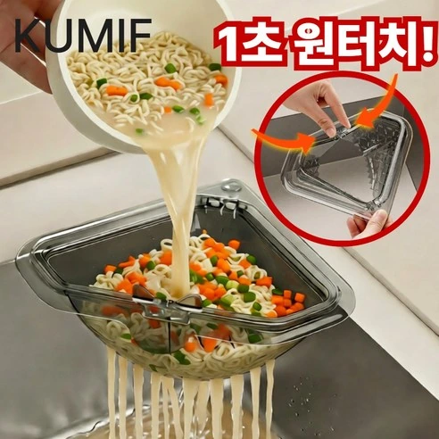
BEST 01한 번 누르면 음식물 물기가 빠진다?
싱크대 코너 원터치 자석 음식물 거름망
싱크대 모서리에 무타공으로 고정하고 원터치 방식으로 음식물의 물기를 빼는 주방 거름망입니다.
원터치 배수 방식 확인하기 →공간별 맞춤주방 견적과 KCC글라스 창호 정부지원·구독조건을 확인해보세요.
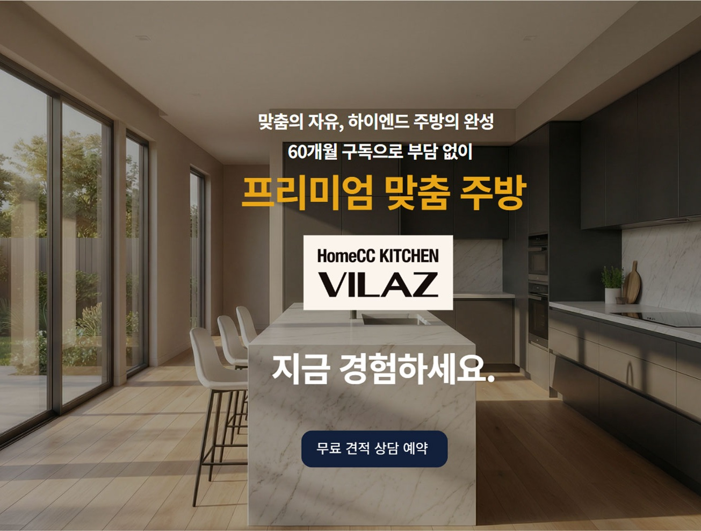
우리 집 크기와 생활방식에 맞춘 주방 구성과 최대 60개월 구독조건을 확인해보세요.
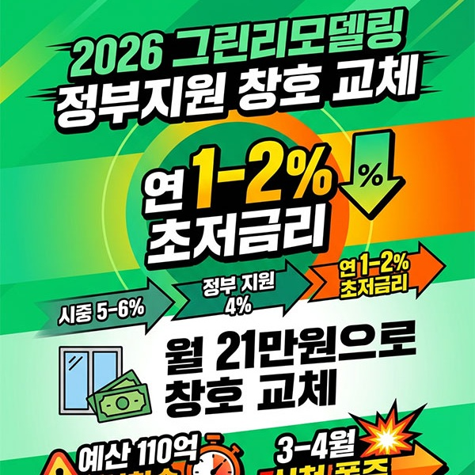
2026 그린리모델링 정부지원 대상 여부와 연 1~2% 초저금리 조건을 확인해보세요.
※ 이 페이지는 네이버 쇼핑 커넥트, 쿠팡 파트너스, 토스쇼핑 쉐어링크 등 제휴마케팅 활동의 일환으로, 판매 발생 시 이에 따른 일정액의 수수료를 제공받습니다.
상품 가격, 할인율, 배송비, 재고, 혜택은 판매처 및 제휴사 사정에 따라 변경될 수 있습니다.

BEST 01싱크대 모서리에 무타공으로 고정하고 원터치 방식으로 음식물의 물기를 빼는 주방 거름망입니다.
원터치 배수 방식 확인하기 →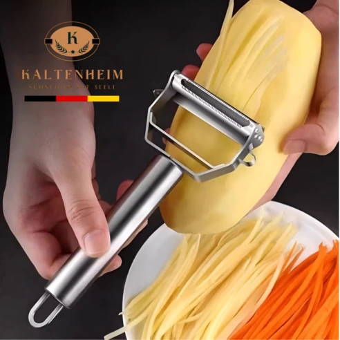
BEST 02스테인리스 칼날로 채썰기와 껍질 벗기기를 간편하게 활용하는 다용도 주방 도구입니다.
칼날 구조와 사용방법 보기 →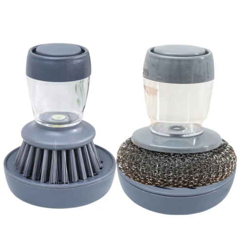
BEST 03손잡이 내부에 세제를 넣고 버튼으로 배출해 설거지와 주방 청소에 활용하는 세척솔입니다.
세제 배출 방식 확인하기 →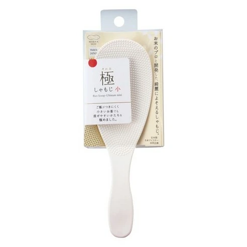
BEST 04표면 돌기 구조로 밥알이 달라붙는 것을 줄이고 작은 그릇에도 쓰기 편한 미니 밥주걱입니다.
표면 구조와 크기 확인하기 →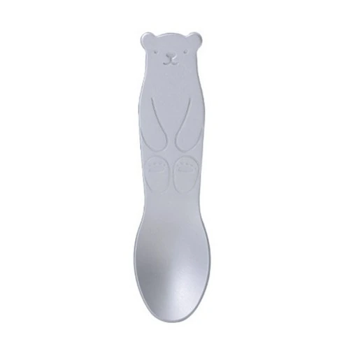
BEST 05알루미늄의 열전도성을 활용해 단단한 아이스크림을 뜰 때 사용하는 동물 모양 디저트 스푼입니다.
모양과 상세구성 확인하기 →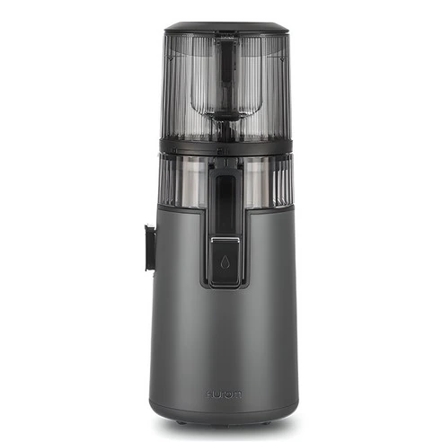
BEST 06저속 착즙 방식으로 과일과 채소 음료를 준비할 수 있는 휴롬 브랜드 주방가전입니다.
착즙 방식과 구성품 확인하기 →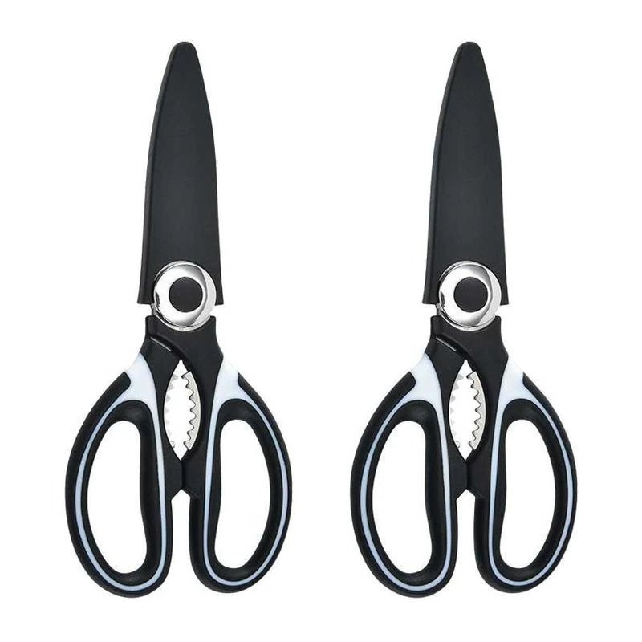
BEST 07고기와 채소 손질 등 다양한 조리에 활용할 수 있는 304 스테인리스 주방가위 2개 구성입니다.
재질과 상세크기 확인하기 →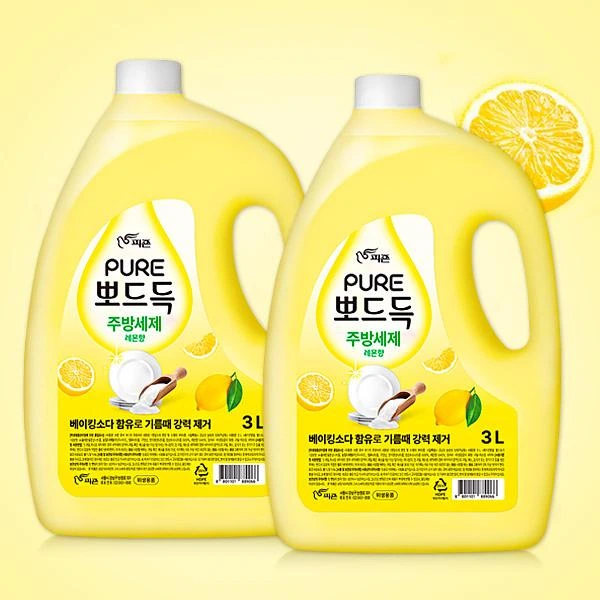
BEST 08식기와 조리도구 세척에 사용하는 레몬향 대용량 주방세제 3L 두 개 구성입니다.
용량과 구성 확인하기 →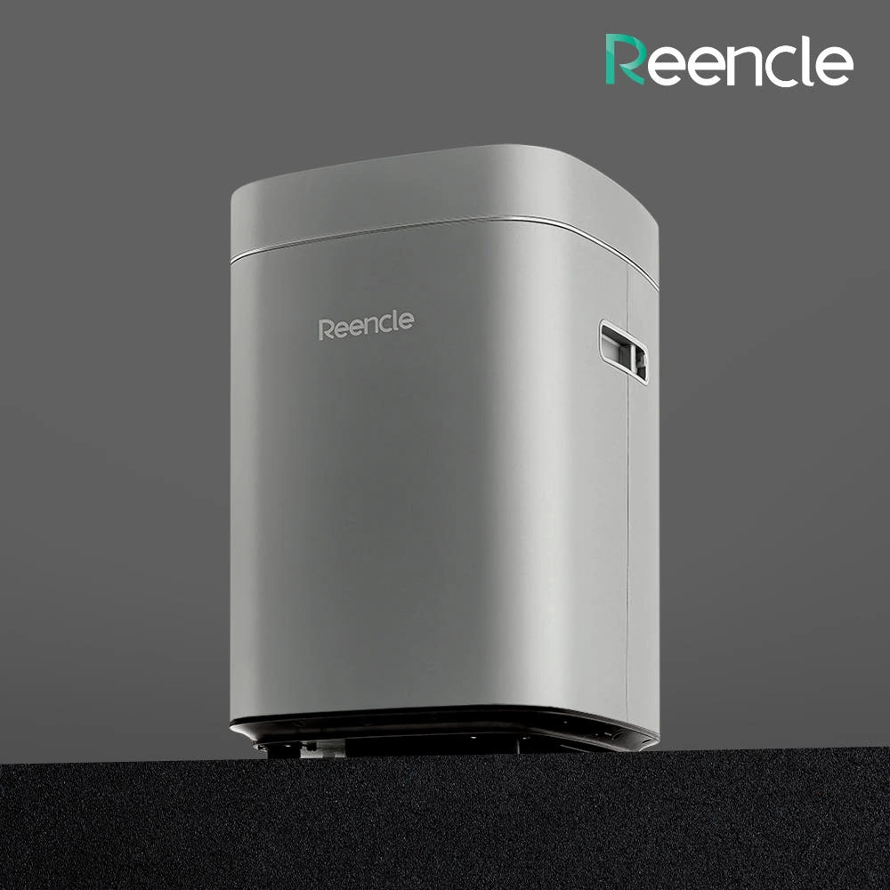
BEST 09미생물 분해 방식으로 음식물 쓰레기를 관리하는 린클 프라임S 프리미엄 주방가전입니다.
처리 방식과 용량 확인하기 →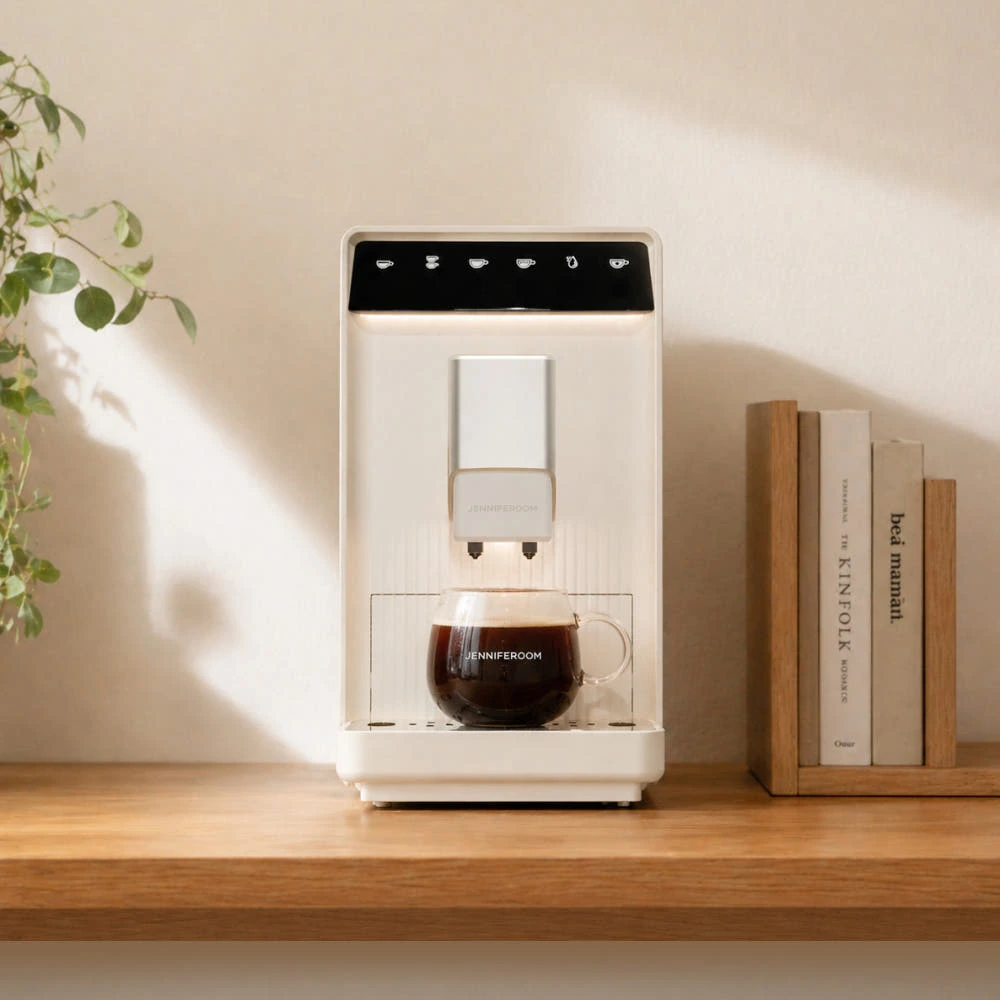
BEST 1019Bar 압력과 전자동 추출 방식으로 집에서 원두커피를 간편하게 즐길 수 있는 커피머신입니다.
추출 기능과 구성품 확인하기 →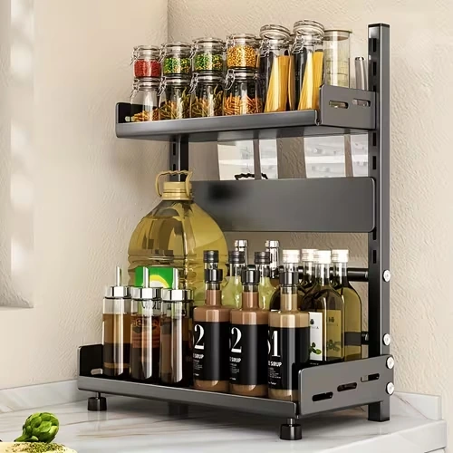
BEST 11주방 조리대의 양념통과 소형 용기를 여러 층으로 정리해 필요한 재료를 쉽게 찾도록 돕는 수납 선반입니다.
선반 크기와 적층 구조 보기 →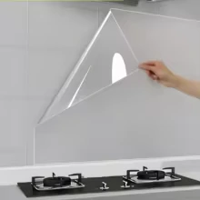
BEST 12가스레인지 주변 벽면에 붙여 물과 기름 오염을 줄이는 데 활용하는 투명 정전기 부착 시트입니다.
부착 방법과 크기 확인하기 →